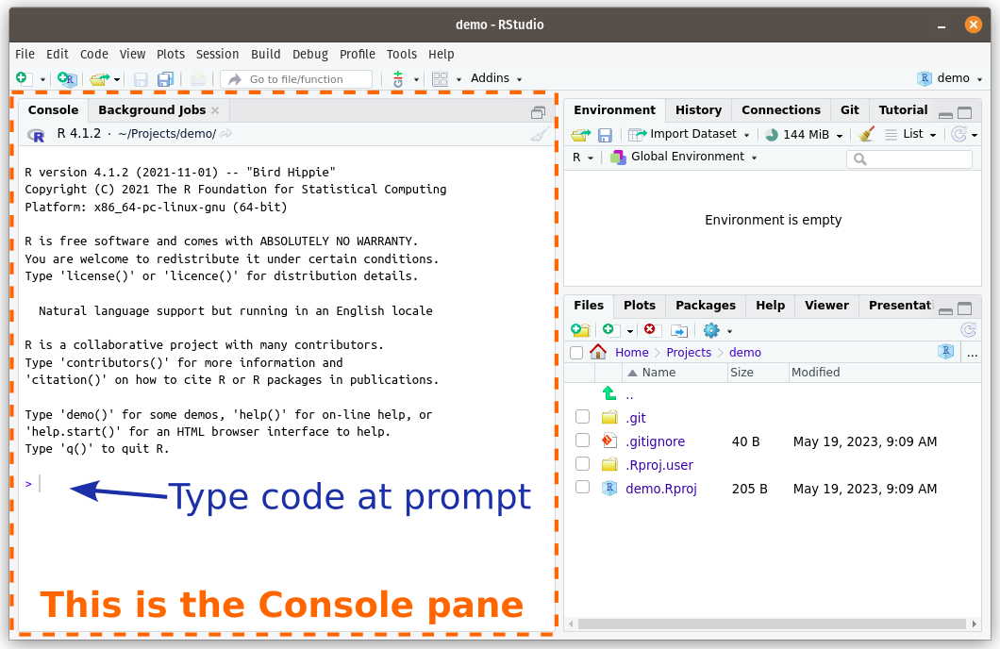
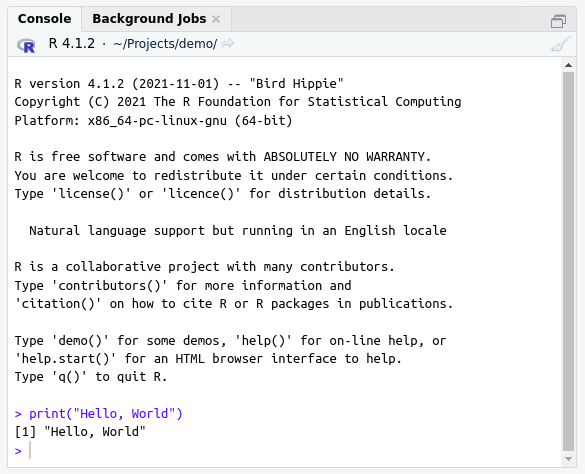

:::{.callout-warning}
## Warning
This chapter is a draft, and may be updated soon.
:::3 Introduction to R
It is a long-standing tradition that your first program in any new programming language should simply display the message “Hello, World!”.
In R we can use the print() function to display a piece of data (such as the text Hello, World!).
For example, we can run this line of code in R:
print("Hello, World!")And R will return this result:
[1] "Hello, World!"
Tip
What’s happening here?
We will learn more about the different parts of this code in this chapter, but briefly:
print(...)is a function: it is a recipe that takes some input ingredients (which we list between the parentheses after the function’s name), and does something with them."Hello, World!"is a string of characters (and other symbols, such as!). A character string is a type of data that computers can work with. Here we are supplying it as the input argument to theprint()recipe.
Exercise: Try it yourself: Open up RStudio and copy or type the line of code into the RStudio Console pane (see Fig. Figure 3.1).

Note that you will need to write the code after the prompt, which is the > symbol that starts the lowest line in the Console.
After you have written all the code, press the

Congratulations! You just ran your first program in R.
Exercise: Try to edit the line in the Console containing the print("Hello, World!") command that you just ran. Can you change it?
Note
Once you have pressed
It can get tedious to rewrite the code you have already run in the Console. However, click at the new (empty) Console prompt, and press the Up arrow on your keyboard. RStudio should autofill the prompt with the previous line of code from your history.
Modify this line to print out a different sentence, and rerun your new code.
3.1 Data
The central component of everything we will be doing in R this semester is data. Even non-data science programs revolve around data.
At a very basic level, a computer is just a fancy calculator that adds and subtracts numbers. Even things like words and pictures are stored inside a computer as numbers.
However, we often want to work work with data that is not numbers. For example, in the last section we were able to get R to print out the sentence Hello, World! To your computer that was just numbers flowing down wires as electrical signals. But the R programming language took care of converting our instruction into something your computer could understand.
This is the magic of programming languages! They allow us to write commands in (relatively) human-readable instructions, and then take care of translating that into the very unreadable numbers that computers work with.
R allows us to work with several “higher-level” types of data. These data types include:
the numeric data type holds numbers such as
42or-12.5or0. Unlike text, numbers are written without quotation marks around them.the character data type holds text (i.e. letters, symbols, and the characters that represent numbers). We need to put the text inside quotation marks so that R knows where the text starts and ends:
"this is character data".- Note: in other programming languages this datatype is sometimes known as a “character string” or just a “string”.
the Boolean data type holds a value that is either
TRUEorFALSE. (This is sometimes also referred to as the logical data type.)
Exercise: What data type is "Introduction to Computing and Data for Scientists"?
Exercise: Type the number 2 into the RStudio console. Hit the
Exercise: What data type is FALSE? In the RStudio Console, type in typeof(FALSE), and hit the
Tip
typeof() tells us the data type of any data we put inside the brackets. (Technically it is a function - we will learn more about these soon.)
3.2 Operators
3.2.1 Combining data with operators
Okay, now we know about data.
But data by itself is not especially useful. It just sits there until you do something to it. There are many ways of doing things to data, but some of the simplest are operators.
Operators operate on data. You may not have heard the name operator before, but you are already familiar with many operators, such as + and - for adding and subtracting numbers.
Exercise: Try it yourself: Try entering a number after the > in the Console (e.g. 1), then Enter, and see what happens.
When you hit enter, the R interpreter reads in the line, evaluates it, and returns the answer. In this case, you entered 1, so the computer thinks ‘Hey, it’s a 1! Wow, a one! The result of 1 is… drum roll, please… 1!’ and returns the result of this expression, which is a one.
Cool! But not, I confess, particularly useful. Let’s fix that: next we’ll add two numbers together.
At the prompt, enter two numbers separated by a plus sign, +
> 1 + 1
What do you get?
(Note that I’ve left the Console’s > prompt in the example code above, but I will leave it out in future.)
Great! Let’s move on and investigate operators in more depth…
3.2.2 Operating on numbers
Heart surgeons operate on hearts, brain surgeons operate on brains. You will be operating on numbers… does that make you a data surgeon?
Here are some of the operators available to us in R:
| Operator | Example | Result |
|---|---|---|
+ |
5 + 2 |
7 |
- |
5 - 2 |
3 |
* |
5 * 2 |
10 |
/ |
5 / 2 |
2.5 |
^ |
5 ^ 2 |
25 |
%% |
5 %% 2 |
1 |
Some of these might seem obvious, while others might be unfamiliar. In this section’s exercises we will go through them all and figure out what they do.
3.2.3 Which operator goes first?
Just like in normal math, we can do sums in R with multiple operators:
3 + 5 / 5 * 3 ^ 2In such a case, which operation do we do first?
Again, just like in regular math, some operations are always done before others. For example, all multiplication and division will be done before any addition or subtraction.
F.Y.I.
The order in which operators are calculated is known as operator precedence, and you can find the precedence of any operator here: https://stat.ethz.ch/R-manual/R-devel/library/base/html/Syntax.html
We can change the order of operations with parentheses: ( and ). For example
2 + 2 * 5 = 12whereas
(2 + 2) * 5 = 203.2.4 The - operator
Exercise: In the R Console, type 5 - 2 and hit enter to run the line of code.
You probably have a good idea of what - does, but try changing the numbers just to make sure!
3.2.5 The * operator
In the R Console, type 3 * 2 and hit enter to run the line of code.
What does * do?
3.2.6 The / operator
In the R Console, type 3 / 2 and hit enter to run the line of code.
What does / do? Just to be sure, try some other numbers.
3.2.7 The ^ operator
In the R Console, type 3 ^ 2 and hit enter to run the line of code.
What does ^ do? Try some other numbers like 2 ^ 3 or 16 ^ 0.5
3.2.8 The %% operator
Next up, a slightly trickier one, type 3 %% 2 and hit enter to run the line of code.
What does %% do? You will probably have to try some other numbers to figure this one out.
If you have difficulty try also dividing the same numbers. E.g. try both 9 %% 4 and 9 / 4.
Modify this R code
3 + 5 / 5 * 2 ^ 2
so that it performs the calculation $ rac{3 + 5}{(5 imes 2) ^ 2}$.
When correct, you should get the answer 0.08.
3.3 Storing and reusing results with variables
So far we have learnt how to combine data to get different results.
We can do multiple separate calculations by putting each one on a separate line. When R reads your code, it treats everything on one line as a single expression that is separate from other lines:
2 + 2
5 * 5This program will have two separate outputs: 4 and 25
However, after these results are shown to us, they are thrown away! All that effort just discarded…
What if we wish to save the result of a calculation so that we can reuse it in a subsequent line?
In this case, we need to store the result in a variable.
Run these two lines of code in the RStudio Console and see what result you get.
a <- 2 + 2
5 * a
Then take a look at the Environment tab in the top-right pane of RStudio. Do you see a variable called a? Does it hold the value calculated in the first line of code or the second?
3.3.1 The “result” of the assignment operator
We store the result of an expression in a variable using the assignment operator: <-
variable_name <- value_to_be_storedRun these two lines of code in the RStudio Console and see what result you get.
2 + 3
b <- 2 + 4
If you take another look at the Environment tab in the top-right pane of RStudio, you should see another variable called b. What value does it hold?
2 + 3b <- 2 + 4The second line of code should not print out any output when it runs. This is because assigning the result of an expression to a variable has no “result” in itself. For example, in math \(2+2\) is \(4\), but the expression \(b = 2 + 2\) does not return \(4\) directly (but somebody somewhere is hopefully keeping track of the fact that \(b\) is now equivalent to \(4\)).
If you want to see the data that is stored in a variable, you can put the name of the variable on a line by itself:
some_variableR will evaluate this line: it will ask itself “What is the result of some_variable”, which is just whatever value is stored in that variable.
For example,
c <- 3
c[1] 3The other implication of this is that if you calculate something in R and do not assign the result to a variable then it will be printed out and then forgotten. So remember: if you calculate something important in R that you will need in the future, make sure that you store that result in a variable.
Type the name of one of the variables in your Environment tab in the RStudio Console (e.g. a), and hit Enter to run it.
Does this return the data that you think is stored in that variable?
3.3.2 Variables are… variable
Variables get their name because their value can vary. We have created the variable b that holds the value 6, but we can change the value of b and store a completely different value in it!
Try assigning the value 7 to the variable b using the assignment operator <-.
Since we already created b in an earlier exercise, you should see that its value in the Environment tab updates.
b <- 73.3.3 When does assignment happen
<- is an operator, just like + or *. As such, it has a precedence: it will happen before some operators but after others.
However, it turns out that the <- precedence is extremely low - i.e. it will happen after the result of all the other operators on that line of code have been calculated.
So, when you write:
a <- 2 + 4…you are essentially doing this:
a <- (2 + 4)3.4 How R works
R is an interpreted programming language.
That is a fancy way of saying that R runs (i.e. “interprets”) every line of code one at a time.
So far we have written a line of code and then run it. In a couple of exercises you may have run multiple lines of code where one line depended on a result from a previous line. However, R completely finished running the first line before moving onto the next one.
When R interprets a line of code, it figures out how to convert your human-readable code into computer-readable instructions (which are a series of 0s and 1s, since a computer is basically a bunch of wires that can either have an electrical current flowing down them (which we denote as 1) or not (0)).
Because R is interpreted line-by-line, it is an ideal programming language for exploring and analyzing scientific data, where we typically figure out what to do next as we go along!
- TODO: Expressions and how they are evaluated. Lines and files.
We will soon be learning how to write multiple lines of R code in a file and then run them from the file. However, even when R runs code from a file, it still figures out how to run it one line at a time.
Tip
Compiled Programming Languages
Not every programming language is interpreted like R. Some are compiled.
This means that you write all your code in a file, and then turn all of it into computer-readable instructions at once. This step is called compilation and can take a long time (up to hours for large programs in some languages!). It is typically slower to write programs in a compiled language because of this extra step.
The main advantage of a compiled programming language is that your computer can figure out how to optimize all the lines of code so that they run extremely fast.
Famous examples of compiled programming languages are Java and C++.
3.5 Boolean data
3.5.1 Boolean data revisted
At the start of this chapter we mentioned that there is a type of data in R, called Boolean data, that can have one of two values: TRUE or FALSE.
We can ask R questions that have a true or false answer, for example: “Does the variable x hold the number 3?” or “Is 10 greater than 9?”
We do this with Boolean operators:
| Operator | Example | Result |
|---|---|---|
< |
10 < 9 |
FALSE |
> |
10 > 9 |
TRUE |
== |
x == 3 |
FALSE |
For example:
10 < 9[1] FALSEHere R returns the value FALSE when it evaluates this expression, because 10 is obviously not less than 9.
Combining comparisons
Sometimes we want to know if one datum is greater than or equal to another. You can use the Boolean operators
>=for such a comparison, or<=to see if something is less than or equal to another.
Just as with numeric data, we can store a Boolean value in a variable, e.g. d <- FALSE or e <- 10 < 9. (Remember that assignment always happens last, after we have evaluated the expression on the right-hand side.)
3.5.2 The < and > operators
Exercise: Try it yourself: What do you get if you run 10 < 9 in the RStudio Console?
Can you change one of the numbers so that this expression returns TRUE?
Then change the > to a < operator (i.e. reverse its direction). What is the result now?
3.5.3 The == operators
Let’s try another Boolean operator. What do you get if you run 8 == 10? What about 8 == 8?
What do you think the == operator does?
Combining comparisons
Sometimes we want to know if one datum is greater than or equal to another. You can use the Boolean operators
>=for such a comparison, or<=to see if something is less than or equal to another.
Assign the value TRUE to a variable called d.
d <- TRUE3.6 Vectors
So far we have looked at pieces of data by themselves:
a <- 1
b <- 2
c <- 3
print(a)[1] 1print(b)[1] 2print(c)[1] 3But what about if we want to combine multiple pieces of data together?
R includes several types of container that can hold multiple pieces of data. We can then refer to that container by a single variable. For example, instead of the three variables above, we can create a vector that holds all three values. We create a vector with c(...), putting the objects we want to combine inside the parentheses (and separated by commas):
c(1,2,3)[1] 1 2 3All the data in a vector must be the same type of data. For example, a vector could contain all numbers, or all characters, but not a mix of the two.
Create a vector holding 3 character strings (in this order): “This”, “is a”, “vector!”
c("This", "is a", "vector!")You might be wondering what the numbers in square brackets at the start of each line in the output mean? E.g.
[1]These tell us where abouts in the vector we are. The number indicates the position in the vector of the first element displayed on that line.
For example, the
[1]at the start of the line (before “Introduction”) shows that “Introduction” is the first element in this vector.
3.6.0.1 Operations on vectors
We can use operators on more complicated data structures just as we did on the simpler data types. For example, we can add 2 vectors together:
v1 <- c(1,2,3)
v2 <- c(4,5,6)
v1 + v2[1] 5 7 9As you can see, the individual elements are added together.
What happens if you add two vectors of different lengths? For example, run this code and see what happens:
v3 <- c(10, 20, 30, 40, 50)
v4 <- c(1, 2)
v3 + v4What happens when you add two v3 and v4?
Firstly, we get a warning "longer object length is not a multiple of shorter object length" because v3 is longer than v4. However, a warning doesn’t stop the code running - it merely tells us that something unexpected might be happening.
In this particular case, R will do something called recycling which repeats the shorter vector over and over until it is the same length as the longer vector. I.e. v4 will be repeated 2.5 times to become (1,2,1,2,1) before adding it to v3.
R warns you that this is happening because this may not be what you wanted, especially if you hadn’t realized that the vecotrs were different lengths.
v3 <- c(10, 20, 30, 40, 50)
v4 <- c(1, 2)
v3 + v43.7 Functions
Perhaps, keen mathematician that you are, you want to calculate the length of the hypotenuse of a triangle. Dredging up memories of early math classes, you will doubtless recall Pythagoras’s theorem that the hypotenuse (the long side) of triangle is given by:
\(c = \sqrt{a^2 + b^2}\)
(\(c\) is the hypotenuse [long side] and \(a\) and \(b\) are the short sides.)
Let’s say we have a triangle where the shorter sides (a & b) are 3 and 4 units long. Can you calculate the length of side c in R using just the operators from the first section?
Hint #1: The square root is equal to the 0.5 power of a number: 4 ^ 0.5 = 2
Hint #2: Just like in regular math equations, R will calculate some operators before others. For example it will do all multiplications before any additions. However, just like in regular math, we can change the order of operations by wrapping parts of our calculation in parentheses: (...)
Did you get the answer 5? Fantastic!
3.7.1 Re-useable code = functions
What’s that? Another complaint? You have to write out this long expression every time you need the hypotenuse of a triangle? (No doubt this is a frequent chore in your day-to-day life.)
Again, there is a solution! R allows us to save pieces of code in variables. Yes, you heard that right: variables don’t just have to store data, they can also store code!
These stored, reusable sections of code are called functions.
For example, you could create a function to calculate the sum of two numbers:
adder <- function(number1, number2) {
result <- number1 + number2
return(result)
}Entering these 4 lines at the console prompt will be slow and error-prone, so let’s try something different.
Click on the “File” menu at the top of RStudio. Select “New File” and then “R Script”. A blank editor window should appear in a new pane above the console.
Copy the adder function from the previous page into this empty script. Then press “Control + Alt + R” on your keyboard (simultaneously). This will run the contents of your script all at once.
If successful, you should see that adder appears in the Environment pane under a new section called Functions.
How do we use our adder function? Go back to the console, and type something like this:
adder(3, 5)
If your function is working correctly you should get the result of the 2 numbers that you entered inside the braces.
Let’s take another look at the adder function to understand what’s going on:
adder <- function(number1, number2) {
result <- number1 + number2
return(result)
}Line 1: The first line creates a new function with the function keyword and saves it to the name adder using the assignment operator <-, just as we did for variables.
After function are a pair of parentheses. Inside these, we put a list of the parameters that the function can take, separated by commas. In this case, our adder function has two paramters (the numbers to add together). We are going to give these numbers the temporary names number1 and number2 (creative, I know). We will use these parameter names inside the function to refer to these two numbers.
We end the line with an opening curly bracket { to indicate that the code that follows is part of the function.
Line 2: This is the meat of our adder function. We add our two number paramters together and store them in a variable called result. Its important to note that result only exists inside the curly brackets of the adder function (i.e. it vanishes after the function has finished).
Line 3: Here we specify what the function is should return: in this case we want to return the result variable.
Line 4: We signal the end of the function with a closing curly bracket (matching the one from the end of line 1).
You might object (and not without reason) that our adder function is a very trivial example. Wouldn’t it just be easier to use the + operator?
Yes, it would! So let’s look at a more complicated function.
We can create a function to calculate the hypotenuse like this:
hypotenuse <- function(a, b) {
c <- (a^2 + b^2)^0.5
return(c)
}Then we can use this hypotenuse function as many times as we like. For example calculate the hypotenuse of a triangle with sides of length 3 and 4, we would run:
hypotenuse(3, 4)[1] 5Use the hypotenuse() function to calculate the area of a triangle with sides of length 3 and 4.
Hint: Try changing the numbers inside the parentheses after hypotenuse.
Did you get the answer 5? Fantastic!
hypotenuse <- function(a, b) {
c <- (a^2 + b^2)^0.5
return(c)
}3.7.2 How the hypotenuse function works
There are a few things to note about this code:
- We tell R that we are creating a reusable function using the
functionkeyword. functionis followed by parentheses(...)that contain parameters. Parameters are the names that we give to the input data to the function.- For example, above we created two parameters:
aandb - You can have as many parameters as you want in a function, from zero on up. They must be separated by commas.
- For example, above we created two parameters:
- The reusable code goes inside a pair of curly brackets
{...}- We can now use the function’s parameters in this code (e.g.
aandb). Essentially we temporarily create new variables with the parameter names (but these are)
- We can now use the function’s parameters in this code (e.g.
- At the end of the function we can return a particular result with
return(...)- just replace the dots with a value or - We store the function in a name with the assignment operator
<-(just like we did with variables) - When we want to run the code, we write the function name followed by parentheses, with any arguments inside the parentheses (separated by commas)
Replace the blanks to create a function to calculate the area of a triangle instead. Save this function as triangle_area.
_______ <- function(a, b) { area <- _______ return(area) }
Hint: The area of a triangle is \(0.5 imes a imes b\).
3.8 Packages
Functions are clearly useful - we can save a lot of time and effort by writing our code once as a function, and then just calling that function whenever we need to do that thing.
Of course, we can save even more time by not writing the function ourselves but instead using a function that somebody else has written which does what we want.
In R (as in many other programming languages) we can import collections of functions (and other useful things, such as datasets) that other people have written. These collections are called packages.
3.8.1 Installing packages
By default R will come with several useful packages installed. You can which ones are currently installed by going to the Packages tab of the bottom right pane in RStudio.
To install a new package, either:
Click on the Install button in the Packages tab, and type the name of the package you want into to the pop-up that appears.
Go to the RStudio Console and type in (making sure to replace the name of the package you want inside the quotes!):
install.packages("some_package_name")For example, to install a package called the
tidyverse(which we will be using for much of this book), you would run:install.packages("tidyverse")Having gone through this chapter, this code should hopefully make some sense!
install.packages()is a function (built-in to the core R programming language), and"tidyverse"is a character string that we are passing as the argument to that function.
Note that it can take some time to install a package (e.g. the tidyverse package can take 10-15 minutes to install!), so it’s worth checking to see if it is already installed before you waste a lot of time.
3.8.2 Loading packages
A package only needs to be installed to your computer once.
However, you need to load the functions and other objects from that package in every R session that you wish to use them (because they will not automatically be available to R even after you have installed them).
To load a package we use the library() function. For example, to load the tidyverse package, you would run:
library(tidyverse)